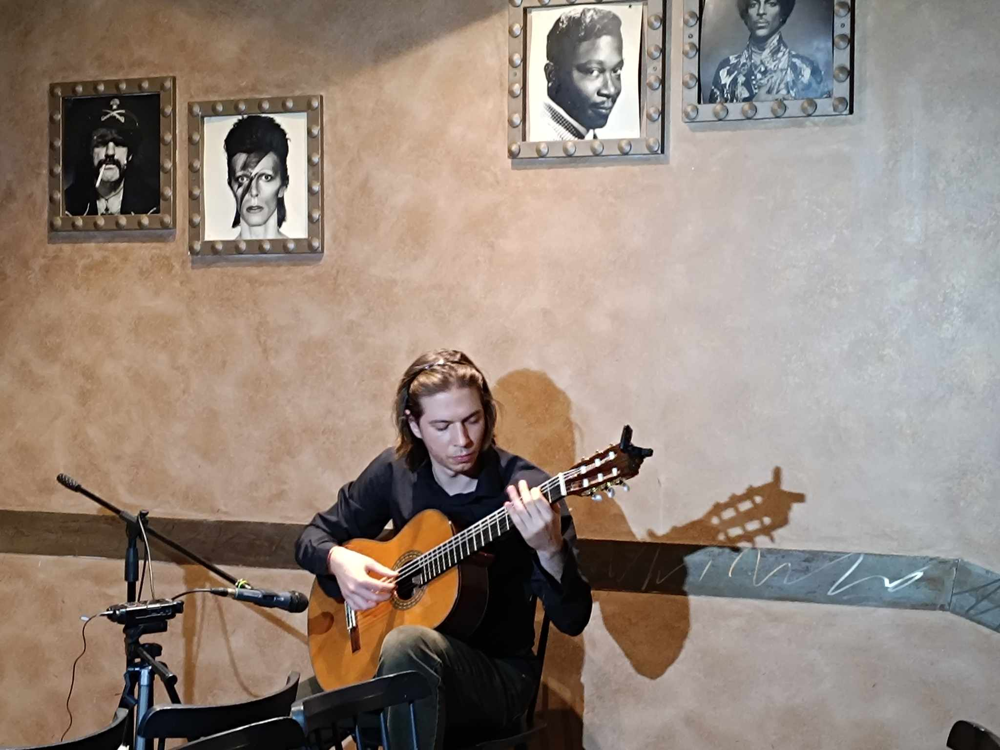
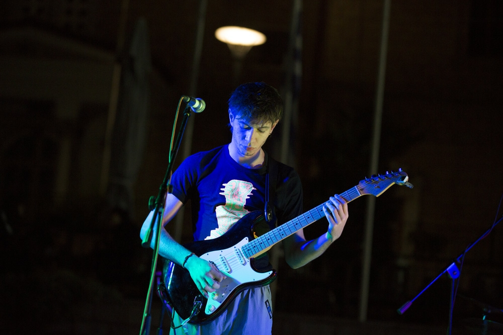

Διπλωματούχος καθηγητής Κλασικής Κιθάρας με τετραετή διδακτική εμπειρία, ενεργή παρουσία σε live εμφανίσεις και συμμετοχές σε δισκογραφικές παραγωγές ως μπασίστας.
Διδάσκω κλασική και ηλεκτρική κιθάρα σε ωδειακό περιβάλλον και ιδιαίτερα μαθήματα. Παράλληλα δραστηριοποιούμαι ως μπασίστας και ηλεκτρικός κιθαρίστας, συνδυάζοντας την κλασική κατάρτιση με την πρακτική εμπειρία της σκηνής.
Η διδασκαλία μου βασίζεται στη σύνδεση τεχνικής, μουσικότητας και πραγματικού ρεπερτορίου, με στόχο ο μαθητής να αποκτήσει αυτονομία και ουσιαστική σχέση με το όργανο.

Ενεργός μπασίστας και ηλεκτρικός κιθαρίστας σε μουσικά σχήματα, με συμμετοχή σε δύο δισκογραφικές παραγωγές ως μπασίστας και συνεχή παρουσία σε live εμφανίσεις.
Η σκηνική και studio εμπειρία λειτουργεί συμπληρωματικά στη διδασκαλία, φέρνοντας στο μάθημα πρακτική γνώση για ήχο, performance και μουσική συνεργασία.

Για συνεργασίες με ωδεία, ιδιαίτερα μαθήματα ή μουσικές παραγωγές.
Αθήνα • 6949169092 • alkistri@gmail.com
Στείλε Email